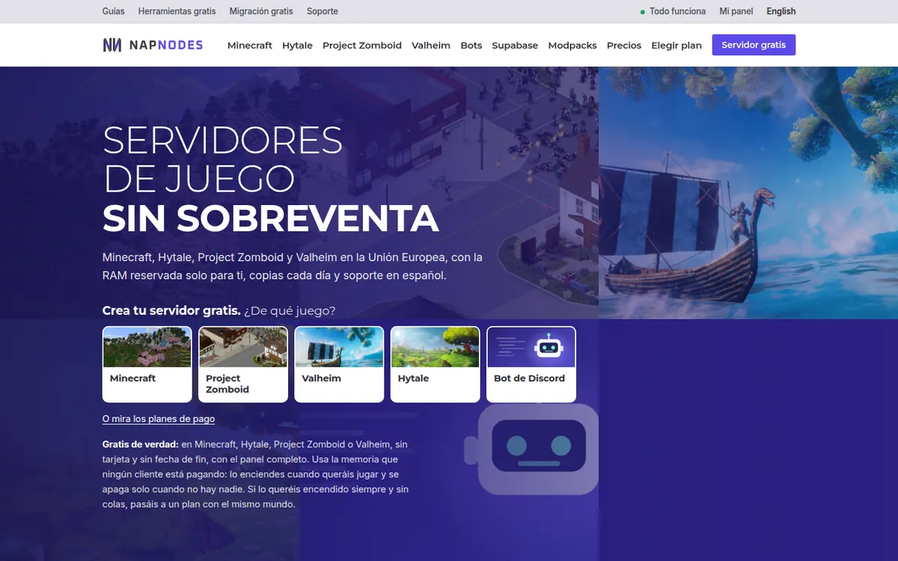

NapNodes
Mi propio hosting de servidores de juego (Minecraft, Project Zomboid, Valheim, Hytale) en la UE, operado con agentes de IA.
69 cuentas en sus primeras seis semanas, más de la mitad llegadas desde ChatGPT.
Lo que he hecho
- Todo el producto: la web en dos idiomas, el panel del cliente y el servicio que cobra, crea los servidores y vigila las máquinas.
- Agentes con Claude Code en producción: uno resuelve y contesta los tickets de soporte, limitado a los servidores de cada cliente; otro encuentra en Reddit y Steam a quien busca servidor y redacta la respuesta para que yo la revise.
- Cobros propios con Stripe: el cliente paga y su servidor se crea solo, sin intervención manual.
- Contenido pensado para que los asistentes de IA lo citen (llms.txt, guías en Markdown y más de 60 herramientas gratis).
Next.js, TypeScript, Stripe, MariaDB, Ansible, Pterodactyl, Claude Code.